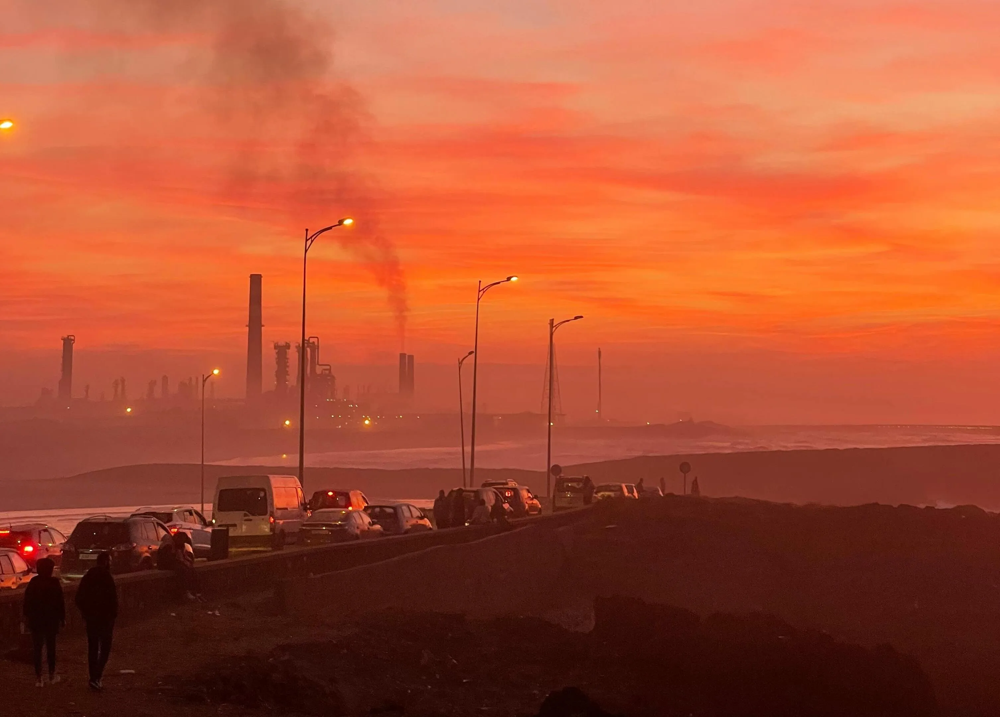
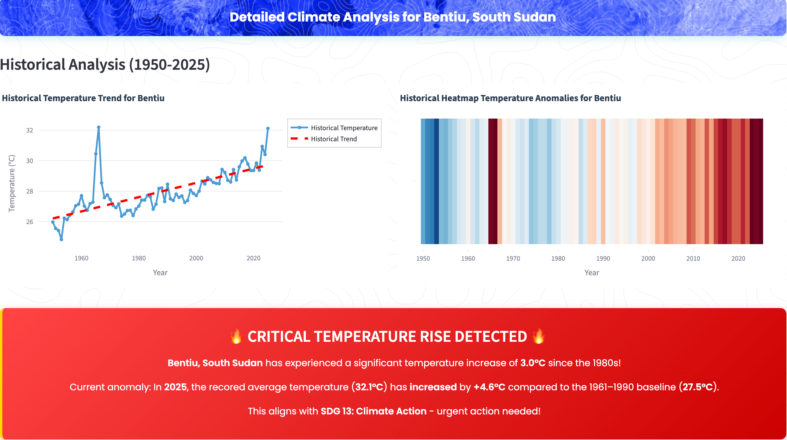
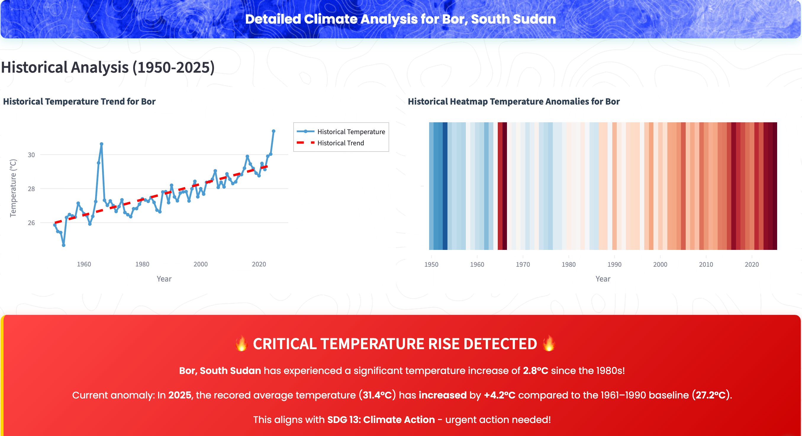
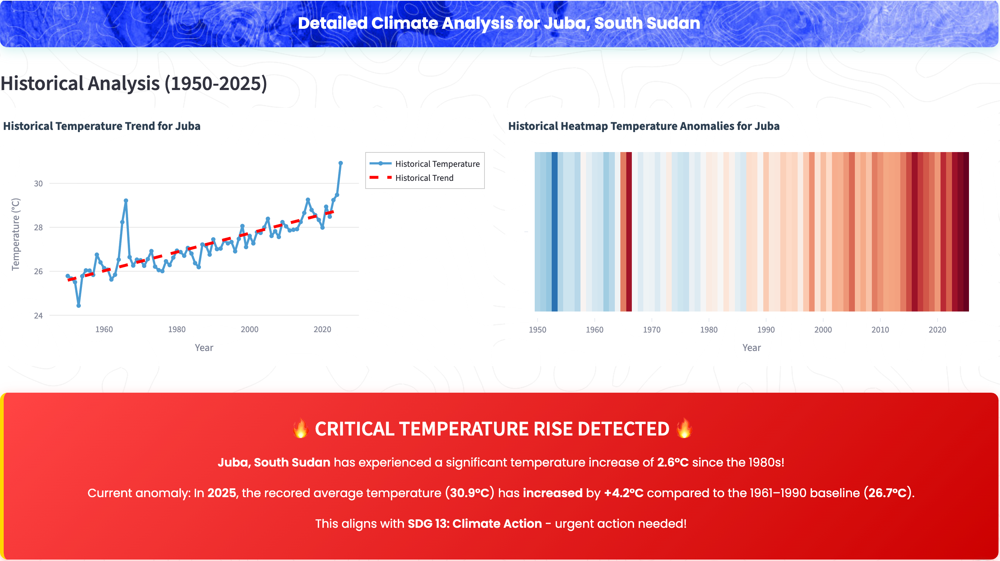

Pollutants from vehicles, factories, and everyday lifestyles negatively impact health, affecting respiratory and cardiovascular systems. The Africa Clean Air Programme, endorsed by the African Union Commission, notes that super pollutants, and their impact on air quality, can poison communities and accelerate the worst effects of climate change, putting both health and economies under stress. It continues to note that across the continent, approximately 1 million people die prematurely per year due to the health impacts of poor air quality.
sensors.AFRICA records that the leading pollutant is particulate matter (PM), a common proxy indicator for air pollution, with strong evidence for the negative health impacts associated with exposure to it. PM is composed of sulfate, nitrates, ammonia, sodium chloride, black carbon, mineral dust and water droplets. Of note is household (indoor) air pollution and ambient (outdoor) air pollution.
According to the World Health Organisation, the combined effects of ambient air pollution and household air pollution are associated with 6.7 million premature deaths annually. Ambient air pollution is estimated to have caused 4.2 million premature deaths worldwide while household air pollution was responsible for an estimated 3.2 million deaths per year.
In 2019, 99% of the world’s population was living in places where the WHO air quality guidelines levels were not met. Sadly, women and children bear the greatest health burden, with air pollution being one of the greatest environmental risks to child health. Looking at the 2030 Agenda for Sustainable Development Goals (SDGs), Air pollution impacts cut across several of them. SDGs related to air quality are SDG 3.9 focusing on reducing mortality and illness from hazardous chemicals and air pollution; SDG 11.6 aiming to reduce adverse environmental impact of cities, specifically by addressing air quality as well as SDG 7, which focuses on affordable and clean energy.
Exposure to PM2.5 varies across the continent.
Indoor air pollution death rates are high in the West, Central and East.
Northern and Southern Africa record the highest outdoor air pollution death rates.
South Sudan: Heating up and its effects on air quality
Climate change, a phenomenon referring to long-term shifts in temperatures and weather patterns, has been recorded as mainly driven by human activities. Heatwaves have been known to amplify air pollution risks in Sub-Saharan Africa. Greenhouse gases trap heat, causing the planet's average temperature to rise, and some impacts of climate change exacerbate air quality issues.
On the African continent, we will look at South Sudan, an outlier in temperature anomaly.
Since the 1980s, Bentiu, located in Unity State in the north of South Sudan, has recorded a temperature increase of:
0°CSince the 1980s, Bor, located in Jonglei State in Central South Sudan, has recorded a temperature increase of:
0°CSince the 1980s, Juba, located in the Central Equatoria State in Southern South Sudan, has recorded a temperature increase of:
0°C



South Sudan, and places like it, need to urgently implement systems to mitigate high temperatures. There is a need to support renewable energy, reduce carbon footprint, and advocate for climate policies. Practical steps include:
- Create green spaces like parks and forests, urban forests, rooftop gardens, community gardens and green roofs & walls.
- Plant native species to promote biodiversity.
- Use renewable energy sources and improve energy efficiency.
- Walk, bike or take public transport, which will reduce greenhouse gas emissions
- Reduce, reuse, repair and recycle to reduce the carbon footprint.
- Advocate for change. Speak up and get others to join in taking action.
AIR QUALITY AND INFRASTRUCTURE
People with lower incomes are more likely to live in areas with higher pollution levels due to various factors creating and perpetuating environmental inequality. Environmental burdens of society, like pollution, are disproportionately borne by marginalised communities.
A 2018 study Nature: Air pollution and infant mortality in Africa by Heft-Neal et al., suggests that current estimates for the death toll of air pollution might be too low. With two datasets: one based on household surveys, which detail the time and place of nearly one million births across sub-Saharan Africa, and another detailing spatial distribution of exposure to PM2.5 based on satellite data, they estimate the impact of air pollution on mortality rates among infants in Africa.
Findings show that a 10μg/m³ increase in PM2.5 concentration is associated with a 9% rise in infant mortality. This suggests that PM2.5 exposure is responsible for 22% of infant deaths in the studied countries; this means 449,000 infant deaths in 2015 alone: an extremely high death toll, suggesting the exposure-response relationship in the select African countries is steeper than previous studies.
Across many neighbourhoods, the patterns are familiar:
- Reliance on charcoal or firewood when cleaner energy is unaffordable or unavailable
- Dense, unplanned housing that leaves little room for air to move
- Mixed land use placing homes beside workshops and markets
- Gaps in waste collection that lead to open burning
- Streets running beside major roads with no buffer
These are infrastructure realities, not individual choices, and they shape the air people breathe. To show what this looks like on the ground, we focus on Mathare in Nairobi and use a simple workflow to connect lived experience to evidence.
Mathare: Where Indoor and Outdoor Collide.
In one of Nairobi’s most densely populated sub-county, the line between Indoor and Outdoor air is almost invisible. Mathare packs 206,564 people into just 3 km² (KNBS Census, 2019) , nearly 69,000 residents per km². Smoke from household fuels, vehicle emissions, waste burning, and the settlement’s dense construction make the air outside as hazardous as the air inside.
Mary Njoki’s account, as told to the Nation, curates a five-year journey of dependence on an inhaler, which she used, in part, due to traffic pollutants along the route of her business premises that affected her health. The 62-year-old had to give up selling household goods on the side of the road in Mathare North and start producing her own soap and detergent instead. Even though it doesn't pay as much as the other business, she remembers that "it got so bad that I decided to do this business."
This environmental emergency extends beyond Mathare's boundaries. As of August 2025, Nairobi ranked as Africa’s fourth most polluted city, with informal settlements like Mathare bearing the heaviest burden of this urban-wide crisis. What's happening here offers a window into how extreme density transforms individual pollution sources into collective health emergencies.
We ground this story in air quality sensor data, building footprints, census records, and emissions tracking that reveal how geography, poverty, and policy failures converge to create one of Kenya’s most toxic neighborhoods.
Sensors tell the story
From 2019 to 2024, data from Mathare’s air quality sensors show a steady rise in pollution. Fine particulate matter (PM2.5) reached levels nearly eight times higher than the WHO’s safe annual limit of 5 µg/m³, while coarse particles (PM10) more than doubled the recommended 15 µg/m³.
Every year, the air has grown more hazardous to breathe.
At these concentrations, the risks are severe. The WHO notes that long-term exposure to PM2.5 and PM> increases the likelihood of asthma, heart disease, stroke, and premature death. In Mathare, this means residents are constantly breathing air that carries invisible but life-threatening health costs. To understand why pollution accumulates so heavily here, we need to look beyond the sensors, to Mathare’s built environment; dense housing and limited open space shaping how air moves through the settlement.
Buildings reveal the density
Using Google’s Open Buildings dataset, we verified 775 structures within the Mathare boundary.
Buildings appear tightly packed, filling almost every available space. But the true scale is likely even greater.
As an informal settlement, Mathare has many structures that are difficult to single out individually, and its growing number of multi-storey blocks means that a single footprint often houses dozens of families.

On satellite imagery, they appear tightly packed, filling almost every available space. But the true scale is likely even greater. As an informal settlement, Mathare has many structures that are difficult to single out individually, and its growing number of multi-storey blocks means that a single footprint often houses dozens of families.
When we classify these verified buildings by area, the dominance of residential structures becomes clear.
Behind every footprint on the map are families whose numbers, housing conditions, and energy choices all determine how polluted the air becomes.The census data reveals just how intense this human pressure is.
The treemap highlights how residential structures dominate the settlement, from small single-room units to larger mixed units. The combination of cramped housing and limited open space leaves little room for pollutants to disperse, trapping poor air both inside and outside homes.
Behind every footprint on the map are families whose numbers, housing conditions, and energy choices all determine how polluted the air becomes.
The People Behind the Numbers
The 2019 KNBS Census reveals just how intense this density is. Nearly 69,000 people live in every square kilometre of Mathare, almost three times the density of Kamukunji, Nairobi's second-most dense sub-county.
Housing patterns reflect this pressure. About half of households live under iron-sheet roofs, while the others are stacked in concrete-roofed buildings. This distinction matters for air quality. Iron-sheet roofing usually points to single-storey structures, while concrete or cement slabs are a marker of multi-storey housing.
Energy choices in Mathare show why air pollution persists indoors. Almost half of households rely on paraffin (kerosene), a fuel the World Health Organisation classifies as highly polluting. This means, a single building footprint can stack many families on top of one another, multiplying the emissions and smoke produced in the same limited space. Every day, families fill their homes with PM2.5, carbon monoxide, and toxic fumes, while others depend on charcoal or firewood. Even those using LPG often cook in poorly ventilated rooms, allowing smoke to seep outside.
Every day, families fill their homes with PM2.5, carbon monoxide, and toxic fumes. while others depend on charcoal or firewood. Even households using cleaner LPG often cook in poorly ventilated rooms, allowing smoke to escape outside where it mingles with emissions from neighboring homes.
The census data confirms what the sensors measure, in Mathare, dense living conditions and heavy reliance on polluting fuels turn every household into a source of outdoor air pollution.
Traffic Adds Another Layer of Toxic Air
Beyond the smoke from thousands of cooking fires, busy roads cutting through Mathare deliver a constant stream of nitrogen oxides (NOx) that residents cannot escape as they navigate their community.
climate TRACE data reveals that road transport in Mathare generates approximately 34-37 tonnes of NOx emissions annually. While this represents a modest decline from 2021 levels, the persistent pollution load means that pathways where children play and vendors sell goods remain saturated with toxic air.
Once released, these Nitrogen Oxides (NOx) emissions convert into nitrogen dioxide (NO₂) and contribute to ground-level ozone formation respiratory irritants that cause chest pain and throat inflammation.
Unlike household cooking smoke that residents can sometimes control by opening doors or cooking outside, traffic pollution is constant and inescapable.
For Mathare's residents, this means the busy corridors where people walk to work, children play, and vendors sell goods are contaminated with pollutants. The persistent Nitrogen Oxides (NOx) levels ensure that outdoor air remains unhealthy even without the added burden from household cooking fuels and waste burning.
The Role of Waste in Air Pollution
Air pollution in Mathare doesn’t only come from stoves and crowded homes. The way waste is managed or not managed also fuels the crisis.
Much of Mathare’s waste ends up being burned in the open. Plastic, food scraps, and household refuse are burned in open spaces, releasing PM2.5 and toxic gases directly where families live.
The waste problem extends far beyond Mathare's boundaries. Nairobi's largest dumping ground, Dandora landfill, sits just kilometers away. According to climate TRACE, Dandora landfill releases thousands of tonnes of greenhouse gases every year. The site’s smoke and methane emissions drift into neighbouring communities, adding to the air quality burden in informal settlement.
In 2024, Dandora landfill released about 18,172 tonnes of Methane(CH₄), emissions that have steadily climbed from approximately 17,000 tonnes in 2021.
While methane doesn't directly damage the lungs like PM2.5, its atmospheric effects make Mathare's existing pollution crisis worse.
As methane escapes from decomposing waste, it creates atmospheric conditions that act like an invisible lid over the informal settlement, preventing other pollutants from dispersing naturally.
The methane also reacts with sunlight and nitrogen oxides from traffic to form ground-level ozone, creating another layer of respiratory irritants.
For residents with no choice but to breathe this air daily, Dandora's methane blanket makes their pollution exposure more intense and prolonged. The steady upward trend signals that without intervention, conditions will continue worsening.
The data reveals what policy must address, in Nairobi’s most densely populated settlement, clean air isn't just about individual choices, it requires coordinated action on housing, energy access, waste management, and urban planning.
Conclusion
Addressing air pollution in Africa is of great importance for various reasons. Studies suggest a link between air pollution and increased anxiety and other mental health issues like depression, schizophrenia, eating disorders and addictive behaviors. However, Africa receives the least amount of support to address air quality, with merely 3.7% of total development assistance being invested in the continent according to the Africa Clean Air Programme.
Policies and investments supporting cleaner transport, energy efficient homes, power generation, industry and better municipal waste management would reduce key sources of outdoor air pollution. Access to clean household energy would also greatly reduce ambient air pollution in some regions.
Actionable data is one step towards creating systems that will be a lasting solution to the matter. Expanding air quality monitoring across the continent should be fasttracked with the data then used to assess the links to disease. Hence policymakers can direct regulations and public health interventions. Additionally, public health education should be considered to raise awareness.